pyqha package¶
Module contents¶
The following functions are available from pyqha module and are the most common ones for the end user.
-
pyqha.fitEtot.fitEtot(fin, out=True, ibrav=4, fittype='quadratic', guess=None)[source]¶ This function reads the file fin containing the energies as a function of the lattice parameters 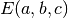 and fits them with a quartic (fittype=”quartic”) or quadratic (fittype=”quadratic”) polynomial. Then it finds the minimun energy and the corresponding lattice parameters. ibrav is the Bravais lattice, guess is an initial guess for the minimization. Depending on ibrav, a different number of lattice parameters is considered. It prints fitting results on the screen (which can be redericted to stdout) if out=True. It returns the lattice parameters and energies as in the input file fin, the fitted coefficients of the polynomial, the corresponding
 ,
the lattice parameters at the minimum and the minimun energy.
,
the lattice parameters at the minimum and the minimun energy.Note: for cubic systems use fitEtotV instead.
-
pyqha.fitEtot.fitEtotV(fin, fout=None)[source]¶ This function reads 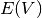 data from the input file fin, fits them with a Murnaghan EOS, prints the results on the stdout and write them in the file “fout”. It returns the volumes and energies read from the input file, the fitted coefficients of the EOS and the corresponding
.
-
pyqha.thermo.compute_thermo(E, dos, TT)[source]¶ This function computes the vibrational energy, Helmholtz energy, entropy and heat capacity in the harmonic approximation from the input numpy arrays E and dos containing the phonon DOS(E). The calculation is done over a set of temperatures given in input as a numpy array TT. It also computes the number of phonon modes obtained from the input DOS (which must be approximately equal to 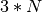, with N the number of atoms per cell) and the ZPE. The input energy and dos are expected to be in 1/cm-1. It returns numpy arrays for the following quantities (in this order): temperatures, vibrational energy, Helmholtz energy, entropy, heat capacity. Plus it returns the ZPE and number of phonon modes obtained from the input DOS.
-
pyqha.thermo.compute_thermo_geo(fin, fout=None, ngeo=1, TT=array([1]))[source]¶ This function reads the input dos file(s) from fin+i, with i a number from 1 to ngeo + 1 and computes vibrational energy, Helmholtz energy, entropy and heat capacity in the harmonic approximation. Then writes the output on file(s) if fout!=None. Output file(s) have the following format:
T 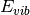 
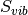 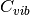 1 ... ... ... ... and are names fout +1, fout +2,... for each geometry.
Returning values are (len(TT),ngeo) numpy matrices (T,gEvib,gFvib,gSvib,gCvib,gZPE,gmodes) containing the temperatures and the above mentioned thermodynamic functions as for example: Fvib[T,geo] -> Fvib at the temperature “T” for the geometry “geo”
-
pyqha.thermo.dos_integral(E, dos, m=0)[source]¶ A function to compute the integral of an input phonon DOS (dos) with the 3/8 Simpson method. m is the moment of the integral, if 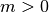 different moments can be calculated. For example, with 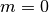 (default) it returns the number of modes from the dos, with 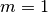 it returns the ZPE. The input energy (E) and phonon DOS (dos) are expected to be in 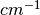.
-
pyqha.thermo.gen_TT(Tstart=1, Tend=1000, Tstep=1)[source]¶ A simple function to generate a numpy array of temperatures, starting from Tstart and ending to Tend (or the closest T<Tend accorinding to the Tstep ) with step Tstep .
-
pyqha.thermo.rearrange_thermo(T, Evib, Fvib, Svib, Cvib, ngeo=1)[source]¶ This function just rearranges the order of the elements in the input matrices The first index of the returning matrices X now gives all geometries at a given T, i.e. X[0] is the vector of the property X a T=T[0,0] . X[0,0] for the first geometry, X[0,1] the second geometry and so on.
-
pyqha.fitFvib.fitFvib(fEtot, thermodata, ibrav=4, typeEtot='quadratic', typeFvib='quadratic', defaultguess=[0.0, 0.0, 0.0, 0.0, 0.0, 0.0])[source]¶ This function computes quasi-harmonic quantities from the 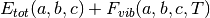 as a function of temperature with Murnaghan’s EOS. 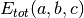 is read from the fin file. 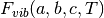 are given in thermodata which is a list containing the number of temperatures ( nT ) for which the calculations are done and the numpy matrices for temperatures, vibrational energy, Helmholtz energy, entropy and heat capacity. All these quantities are for each (a,b,c) as in fin file. The real number of lattice parameters depends on ibrav, for example for hexagonal systems (ibrav=4) you have only (a,c) values. ibrav identifies the Bravais lattice, as in Quantum Espresso.
The function fits with a quadratic or quartic polynomial (as defined by typeEtot and typeFvib ) at each temperature in thermodata and then stores the fitted coefficients. Note that you can chose a different polynomial type for fitting and 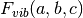. Then it computes the minimun energy 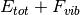 and the corresponding lattice parameters 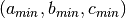 at each temperature by miniimizing the energy.
It also computes the linear thermal expansion tensor (as a numerical derivative of the minimum lattice parameters as a function of temperature (
compute_alpha()).It returns the numpy arrays and matrices containing the temperatures (as in input), the minimun energy, minimun lattice parameters, linear thermal expansions. It also returns the fitted coefficients and the
for
only (at T=0 K) and the fitted coefficients and the for
at each temperature.Warning
The quantities in thermodata are usually obtained from
compute_thermo_geo()or fromread_thermo()andrearrange_thermo(). It is important that the order in the total energy file fin and the order of the thermodynamic data in thermodata is the same! See also example6 and the tutorial.
-
pyqha.fitFvib.fitFvibV(fin, thermodata, verbosity='low')[source]¶ This function computes quasi-harmonic quantities from the 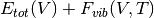 as a function of temperature with Murnaghan’s EOS. 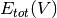 is read from the fin file. 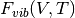 are given in thermodata which is a list containing the number of temperatures ( nT ) for which the calculations are done and the numpy matrices for temperatures, vibrational energy, Helmholtz energy, entropy and heat capacity. All these quantities are for each volume as in fin file.
The function fits with a Murnaghan’s EOS at each temperature in thermodata and then stores the fitted coefficients. It also computes the volume thermal expansion as a numerical derivative of the minimum volume as a function of temperature (
compute_beta()), the constant volume heat capacity at the minimum volume at each T (compute_Cv()) and the constant pression heat capacity (compute_Cp()).It returns the numpy 1D arrays containing the temperatures (as in input), the minimun energy, minimun volume, bulk modulus, volume thermal expansion, constant volume and constant pressure heat capacities, one matrix with all fitted coefficients at each T and finally an array with the
at each T.Warning
The quantities in thermodata are usually obtained from
compute_thermo_geo()or fromread_thermo()andrearrange_thermo(). It is important that the order in the total energy file fin and the order of the thermodynamic data in thermodata is the same! See also example5 and the tutorial.
-
pyqha.fitC.fitCT(aC, chiC, T, minT, ibrav=4, typeC='quadratic')[source]¶ This function calculates the elastic constants tensor CT as a function of temperatature in the quasi-static approximation. It takes in input aC and chiC, the fitted coefficients of the elastic constants as a function of 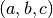 and the corresponding
.
It also takes in input an array of temperatures T and the corresponding
lattice parameters minT, i.e. from a
previous quasi-harmonic calculations (as in example6).
It also needs in input the Bravais lattice ( ibrav ) and the type of polynomial
( typeC ) used for fitting the input aC.The function uses the coefficients aC to compute the elastic tensor at each temperature in the array T from the corresponding lattice parameters in minT.
It returns the temperature array and the a matrix CT with all the elastic tensors at each T ( CT[i] is the elastic constants matrix for the temperature T[i])
Warning
The coefficients aC must be the result of fitting the elastic constants over the same grid used in the quasi-harmonic calculations corresponding to minT values! (See example7)
-
pyqha.fitC.fitCxx(celldmsx, Cxx, ibrav=4, typeC='quadratic')[source]¶ This function fits the elastic constant elements of Cxx as a function of the grid of lattice parameters . The real number of lattice parameters depends on ibrav, for example for hexagonal systems (ibrav=4) you have only (a,c) values. ibrav identifies the Bravais lattice, as in Quantum Espresso.
It returns a 6*6 matrix, each element [i,j] being the set of coefficients of the polynomial fit and another 6*6 matrix, each element [i,j] being the corresponding
. If the chi squared is zero, the fitting procedure was NOT succesful
-
pyqha.fitC.rearrange_Cx(Cx, ngeo)[source]¶ This function rearrange the input numpy matrix Cx into an equivalent matrix Cxx for fitting it. Cx is a 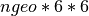 matrix, each Cx[i] is the 6*6 C matrix for a given geometry ( i ) Cxx is a Lmath:6*6*ngeo matrix, each Cxx[i][j] is a vector with all values for different geometries of the Cij elastic constant matrix element. For example, Cxx[0,0] is the vector with ngeo values of the C11 elastic constant and so on.
Submodules¶
Additional functions are available as submodules. Please note the documentation of these functions is still ongoing and can be incomplete or wrong.
pyqha.constants module¶
Some useful standard constants for conversions and calculations.
pyqha.eos module¶
-
pyqha.eos.E_Murn(V, a)[source]¶ As
E_MurnV()but input parameters are given as a single list a=[a0,a1,a2,a3].
-
pyqha.eos.E_MurnV(V, a0, a1, a2, a3)[source]¶ This function implements the Murnaghan EOS (in a form which is best for fitting). Returns the energy at the volume V using the coefficients a0,a1,a2,a3 from the equation:
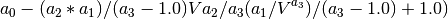
-
pyqha.eos.H_Murn(V, a)[source]¶ This function return
As
E_MurnV()but input parameters are given as a single list a=[a0,a1,a2,a3] and it returns the pressure not the energy from the EOS.
-
pyqha.eos.P_Murn(V, a)[source]¶ As
E_MurnV()but input parameters are given as a single list a=[a0,a1,a2,a3] and it returns the pressure not the energy from the EOS.
-
pyqha.eos.calculate_fitted_points(V, a)[source]¶ Calculates a denser mesh of E(V) points for plotting...
-
pyqha.eos.compute_Cp(T, Cv, V, B0, beta)[source]¶ This function computes the isobaric heat capacity from the eq. Cp-Cv=... Not implemented yet.
-
pyqha.eos.compute_Cv(T, Vmin, V, Cvib)[source]¶ This function computes the isocoric heat capacity as a function of temperature. From Cvib, which is a matrix with Cvib(T,V) as from the harmonic calculations determines the Cv at each temperature by linear interpolation between the values at the two volumes closest to Vmin(T). Vmin(T) is from the minimization of F(V,T) and V is the array of volumes used for it. Returns Cv(T).
Not implemented yet.
-
pyqha.eos.compute_beta(minT)[source]¶ This function computes the volumetric thermal expansion as a numerical derivative of the volume as a function of temperature V(T). This is obtained from the free energy minimization which should be done before.
-
pyqha.eos.fit_Murn(V, E)[source]¶ This is the function for fitting with the Murnaghan EOS as a function of volume only.
The input variable V is an 1D array of volumes, E are the corresponding energies (or other analogous quantity to be fitted with the Murnaghan EOS.
pyqha.fitC module¶
-
pyqha.fitC.fitCT(aC, chiC, T, minT, ibrav=4, typeC='quadratic')[source] This function calculates the elastic constants tensor CT as a function of temperatature in the quasi-static approximation. It takes in input aC and chiC, the fitted coefficients of the elastic constants as a function of and the corresponding
.
It also takes in input an array of temperatures T and the corresponding
lattice parameters minT, i.e. from a
previous quasi-harmonic calculations (as in example6).
It also needs in input the Bravais lattice ( ibrav ) and the type of polynomial
( typeC ) used for fitting the input aC.The function uses the coefficients aC to compute the elastic tensor at each temperature in the array T from the corresponding lattice parameters in minT.
It returns the temperature array and the a matrix CT with all the elastic tensors at each T ( CT[i] is the elastic constants matrix for the temperature T[i])
Warning
The coefficients aC must be the result of fitting the elastic constants over the same grid used in the quasi-harmonic calculations corresponding to minT values! (See example7)
-
pyqha.fitC.fitCxx(celldmsx, Cxx, ibrav=4, typeC='quadratic')[source] This function fits the elastic constant elements of Cxx as a function of the grid of lattice parameters . The real number of lattice parameters depends on ibrav, for example for hexagonal systems (ibrav=4) you have only (a,c) values. ibrav identifies the Bravais lattice, as in Quantum Espresso.
It returns a 6*6 matrix, each element [i,j] being the set of coefficients of the polynomial fit and another 6*6 matrix, each element [i,j] being the corresponding
. If the chi squared is zero, the fitting procedure was NOT succesful
-
pyqha.fitC.rearrange_Cx(Cx, ngeo)[source] This function rearrange the input numpy matrix Cx into an equivalent matrix Cxx for fitting it. Cx is a matrix, each Cx[i] is the 6*6 C matrix for a given geometry ( i ) Cxx is a Lmath:6*6*ngeo matrix, each Cxx[i][j] is a vector with all values for different geometries of the Cij elastic constant matrix element. For example, Cxx[0,0] is the vector with ngeo values of the C11 elastic constant and so on.
pyqha.fitEtot module¶
-
pyqha.fitEtot.fitEtot(fin, out=True, ibrav=4, fittype='quadratic', guess=None)[source] This function reads the file fin containing the energies as a function of the lattice parameters and fits them with a quartic (fittype=”quartic”) or quadratic (fittype=”quadratic”) polynomial. Then it finds the minimun energy and the corresponding lattice parameters. ibrav is the Bravais lattice, guess is an initial guess for the minimization. Depending on ibrav, a different number of lattice parameters is considered. It prints fitting results on the screen (which can be redericted to stdout) if out=True. It returns the lattice parameters and energies as in the input file fin, the fitted coefficients of the polynomial, the corresponding
,
the lattice parameters at the minimum and the minimun energy.Note: for cubic systems use fitEtotV instead.
-
pyqha.fitEtot.fitEtotV(fin, fout=None)[source] This function reads data from the input file fin, fits them with a Murnaghan EOS, prints the results on the stdout and write them in the file “fout”. It returns the volumes and energies read from the input file, the fitted coefficients of the EOS and the corresponding
.
pyqha.fitFvib module¶
-
pyqha.fitFvib.fitFvib(fEtot, thermodata, ibrav=4, typeEtot='quadratic', typeFvib='quadratic', defaultguess=[0.0, 0.0, 0.0, 0.0, 0.0, 0.0])[source] This function computes quasi-harmonic quantities from the as a function of temperature with Murnaghan’s EOS. is read from the fin file. are given in thermodata which is a list containing the number of temperatures ( nT ) for which the calculations are done and the numpy matrices for temperatures, vibrational energy, Helmholtz energy, entropy and heat capacity. All these quantities are for each (a,b,c) as in fin file. The real number of lattice parameters depends on ibrav, for example for hexagonal systems (ibrav=4) you have only (a,c) values. ibrav identifies the Bravais lattice, as in Quantum Espresso.
The function fits with a quadratic or quartic polynomial (as defined by typeEtot and typeFvib ) at each temperature in thermodata and then stores the fitted coefficients. Note that you can chose a different polynomial type for fitting and . Then it computes the minimun energy and the corresponding lattice parameters at each temperature by miniimizing the energy.
It also computes the linear thermal expansion tensor (as a numerical derivative of the minimum lattice parameters as a function of temperature (
compute_alpha()).It returns the numpy arrays and matrices containing the temperatures (as in input), the minimun energy, minimun lattice parameters, linear thermal expansions. It also returns the fitted coefficients and the
for
only (at T=0 K) and the fitted coefficients and the for
at each temperature.Warning
The quantities in thermodata are usually obtained from
compute_thermo_geo()or fromread_thermo()andrearrange_thermo(). It is important that the order in the total energy file fin and the order of the thermodynamic data in thermodata is the same! See also example6 and the tutorial.
-
pyqha.fitFvib.fitFvibV(fin, thermodata, verbosity='low')[source] This function computes quasi-harmonic quantities from the as a function of temperature with Murnaghan’s EOS. is read from the fin file. are given in thermodata which is a list containing the number of temperatures ( nT ) for which the calculations are done and the numpy matrices for temperatures, vibrational energy, Helmholtz energy, entropy and heat capacity. All these quantities are for each volume as in fin file.
The function fits with a Murnaghan’s EOS at each temperature in thermodata and then stores the fitted coefficients. It also computes the volume thermal expansion as a numerical derivative of the minimum volume as a function of temperature (
compute_beta()), the constant volume heat capacity at the minimum volume at each T (compute_Cv()) and the constant pression heat capacity (compute_Cp()).It returns the numpy 1D arrays containing the temperatures (as in input), the minimun energy, minimun volume, bulk modulus, volume thermal expansion, constant volume and constant pressure heat capacities, one matrix with all fitted coefficients at each T and finally an array with the
at each T.Warning
The quantities in thermodata are usually obtained from
compute_thermo_geo()or fromread_thermo()andrearrange_thermo(). It is important that the order in the total energy file fin and the order of the thermodynamic data in thermodata is the same! See also example5 and the tutorial.
pyqha.fitfreqgrun module¶
-
pyqha.fitfreqgrun.fitfreq(celldmsx, min0, inputfilefreq, ibrav=4, typefreq='quadratic', compute_grun=False)[source]¶ An auxiliary function for fitting the frequencies. It returns a matrix of nq*modes frequencies obtained for the fitted polynomial (quadratic or quartic) at the minimun point min0. It also returns the weigths of each q point where the frequencies are available.
-
pyqha.fitfreqgrun.fitfreqxx(celldmsx, freqxx, ibrav, out, typefreq)[source]¶ This function fits the frequencies in freqxx as a function of the grid of lattice parameters.
It returns a nq*modes matrix, whose element [i,j] is the set of coefficients of the polynomial fit and another nq*modes matrix, whose element [i,j] is the corresponding chi squared. If the chi squared is zero, the fitting procedure was NOT succesful
-
pyqha.fitfreqgrun.freqmin(afreq, min0, nq, modes, ibrav, typefreq)[source]¶ This function calculate the frequencies from the fitted polynomials at the minimun point min0. afreq contains the fitted polynomial coefficients.
It returns a nq*modes matrix, whose element [i,j] is the fitted frequency
-
pyqha.fitfreqgrun.freqmingrun(afreq, min0, nq, modes, ibrav, typefreq)[source]¶ This function calculate the frequencies and the gruneisen parameters from the fitted polynomials at the minimun point min0. afreq contains the fitted polynomial coefficients.
It returns a nq*modes matrix, whose element [i,j] is the fitted frequency In addition, it returns a nq*modes*6 with the Gruneisein parameters. Each element [i,j,k] is the the Gruneisein parameter at nq=i, mode=j and direction k (for example, in hex systems k=0 is a direction, k=2 is c direction, other are zero)
Note that the Gruneisein parameters are not multiplied for the lattice parameters
-
pyqha.fitfreqgrun.rearrange_freqx(freqx)[source]¶ This function rearrange the input numpy matrix freqx into an equivalent matrix freqxx for the subsequent fitting. freqx is a ngeo*nq*modes matrix, each freqx[i] is the nq*modes freq matrix for a given geometry (i) freqxx is a nq*modes*ngeo matrix, each freqxx[i][j] is a vector with all values for different geometries of the frequencies at point q=i and mode=j. For example, freqxx[0][0] is the vector with ngeo values of the frequencies at the first q-point and first mode so on.
pyqha.fitutils module¶
-
pyqha.fitutils.expand_quadratic_to_quartic(a)[source]¶ This function gets a vector of coefficients from a quadratic fit and turns it into a vector of coeffients as from a quartic fit (extra coeffients are set to zero)
-
pyqha.fitutils.fit_anis(celldmsx, Ex, ibrav=1, out=False, type='quadratic', ylabel='Etot')[source]¶ An auxiliary function for handling fitting in the anisotropic case
-
pyqha.fitutils.fit_quadratic(x, y, ibrav=4, out=False, ylabel='E')[source]¶ This is the function for fitting with a quadratic polynomial
The most general fitting multidimensional quadratic polynomial for a triclinic system is: a1 + a2 x1 + a3 x1^2 + a4 x2 + a5 x2^2 + a6 x1*x2 + + a7 x3 + a8 x3^2 + a9 x1*x3 + a10 x2*x3 + + a11 x4 + a12 x4^2 + a13 x1*x4 + a14 x2*x4 + a15 x3*x4 + + a16 x5 + a17 x5^2 + a18 x1*x5 + a19 x2*x5 + a20 x3*x5 + a21 x4*x5 + a22 x6 + a23 x6^2 + a24 x1*x6 + a25 x2*x6 + a26 x3*x6 + a27 x4*x6 + a28 x5*x6
ONLY THE HEXAGONAL AND GENERAL CASE ARE IMPLEMENTED, more to be done
The input variable x is a matrix ngeo*6, where x[:,0] is the set of a values x[:,1] is the set of b values x[:,2] is the set of c values x[:,3] is the set of alpha values x[:,4] is the set of beta values x[:,5] is the set of gamma values
-
pyqha.fitutils.fit_quartic(x, y, ibrav=4, out=False, ylabel='E')[source]¶ This is the function for fitting with a quartic polynomial
The most general fitting multidimensional quadratic polynomial for a triclinic system is:
- a1 + a2 x1 + a3 x1^2 + a4 x1^3 + a5 x1^4
a6 x2 + a7 x2^2 + a8 x2^3 + a9 x2^4
- a10 x1*x2 + a11 x1*x2^2 + a12 x1*x2^3
- a13 x1^2*x2 + a14 x1^2*x2^2
- a15 x1^3*x2
a16 x3 + a17 x3^2 + a18 x3^3 + a19 x3^4
- a20 x1*x3 + a21 x1*x3^2 + a22 x1*x3^3
- a23 x1^2*x3 + a24 x1^2*x3^2
- a25 x1^3*x3
- a26 x2*x3 + a27 x2*x3^2 + a28 x2*x3^3
- a29 x2^2*x3 + a30 x2^2*x3^2
- a31 x2^3*x3
a32 x1 * x2 * x3 + a33 x1 * x2^2 * x3
a34 x1 * x2 * x3^2 + a35 x1^2 * x2 * x3
a36 x4 + a37 x4^2 + a38 x4^3 + a39 x4^4
- a40 x1*x4 + a41 x1*x4^2 + a42 x1*x4^3
- a43 x1^2*x4 + a44 x1^2*x4^2
- a45 x1^3*x4
- a46 x2*x4 + a47 x2*x4^2 + a48 x2*x4^3
- a49 x2^2*x4 + a50 x2^2*x4^2
- a51 x2^3*x4
- a52 x3*x4 + a53 x3*x4^2 + a54 x3*x4^3
- a55 x3^2*x4 + a56 x3^2*x4^2
- a57 x3^3*x4
a58 x1 * x2 * x4 + a59 x1 * x2^2 * x4
a60 x1 * x2 * x4^2 + a61 x1^2 * x2 * x4
a62 x1 * x3 * x4 + a63 x1 * x3^2 * x4
a64 x1 * x3 * x4^2 + a65 x1^2 * x3 * x4
a66 x2 * x3 * x4 + a67 x2 * x3^2 * x4
a68 x2 * x3 * x4^2 + a69 x2^2 * x3 * x4
a70 x1 * x2 * x3 * x4
a71 x5 + a72 x5^2 + a73 x5^3 + a74 x5^4
- a75 x1*x5 + a76 x1*x5^2 + a77 x1*x5^3
- a78 x1^2*x5 + a79 x1^2*x5^2
- a80 x1^3*x5
- a81 x2*x5 + a82 x2*x5^2 + a83 x2*x5^3
- a84 x2^2*x5 + a85 x2^2*x5^2
- a86 x2^3*x5
- a87 x3*x5 + a88 x3*x5^2 + a89 x3*x5^3
- a90 x3^2*x5 + a91 x3^2*x5^2
- a92 x3^3*x5
- a93 x4*x5 + a94 x4*x5^2 + a95 x4*x5^3
- a96 x4^2*x5 + a97 x4^2*x5^2
- a98 x4^3*x5
a99 x1 * x2 * x5 + a100 x1 * x2^2 * x5
a101 x1 * x2 * x5^2 + a102 x1^2 * x2 * x5
a103 x1 * x3 * x5 + a104 x1 * x3^2 * x5
a105 x1 * x3 * x5^2 + a106 x1^2 * x3 * x5
a107 x1 * x4 * x5 + a108 x1 * x4^2 * x5
a109 x1 * x4 * x5^2 + a110 x1^2 * x4 * x5
a111 x2 * x3 * x5 + a112 x2 * x3^2 * x5
a113 x2 * x3 * x5^2 + a114 x2^2 * x3 * x5
a115 x2 * x4 * x5 + a116 x2 * x4^2 * x5
a117 x2 * x4 * x5^2 + a118 x2^2 * x4 * x5
a119 x3 * x4 * x5 + a120 x3 * x4^2 * x5
a121 x3 * x4 * x5^2 + a122 x3^2 * x4 * x5
a123 x1 * x2 * x3 * x5
a124 x1 * x2 * x4 * x5
a125 x1 * x3 * x4 * x5
a126 x2 * x3 * x4 * x5
a127 x6 + a128 x6^2 + a129 x6^3 + a130 x6^4
- a131 x1*x6 + a132 x1*x6^2 + a133 x1*x6^3
- a134 x1^2*x6 + a135 x1^2*x6^2
- a136 x1^3*x6
- a137 x2*x6 + a138 x2*x6^2 + a139 x2*x6^3
- a140 x2^2*x6 + a141 x2^2*x6^2
- a142 x2^3*x6
- a143 x3*x6 + a144 x3*x6^2 + a145 x3*x6^3
- a146 x3^2*x6 + a147 x3^2*x6^2
- a148 x3^3*x6
- a149 x4*x6 + a150 x4*x6^2 + a151 x4*x6^3
- a152 x4^2*x6 + a153 x4^2*x6^2
- a154 x4^3*x6
- a155 x5*x6 + a156 x5*x6^2 + a157 x5*x6^3
- a158 x5^2*x6 + a159 x5^2*x6^2
- a160 x5^3*x6
a161 x1 * x2 * x6 + a162 x1 * x2^2 * x6
a163 x1 * x2 * x6^2 + a164 x1^2 * x2 * x6
a165 x1 * x3 * x6 + a166 x1 * x3^2 * x6
a167 x1 * x3 * x6^2 + a168 x1^2 * x3 * x6
a169 x1 * x4 * x6 + a170 x1 * x4^2 * x6
a171 x1 * x4 * x6^2 + a172 x1^2 * x4 * x6
a173 x1 * x5 * x6 + a174 x1 * x5^2 * x6
a175 x1 * x5 * x6^2 + a176 x1^2 * x5 * x6
a177 x2 * x3 * x6 + a178 x2 * x3^2 * x6
a179 x2 * x3 * x6^2 + a180 x2^2 * x3 * x6
a181 x2 * x4 * x6 + a182 x2 * x4^2 * x6
a183 x2 * x4 * x6^2 + a184 x2^2 * x4 * x6
a185 x2 * x5 * x6 + a186 x2 * x5^2 * x6
a187 x2 * x5 * x6^2 + a188 x2^2 * x5 * x6
a189 x3 * x4 * x6 + a190 x3 * x4^2 * x6
a191 x3 * x4 * x6^2 + a192 x3^2 * x4 * x6
a193 x3 * x5 * x6 + a194 x3 * x5^2 * x6
a195 x3 * x5 * x6^2 + a196 x3^2 * x5 * x6
a197 x4 * x5 * x6 + a198 x4 * x5^2 * x6
a199 x4 * x5 * x6^2 + a200 x4^2 * x5 * x6
a201 x1 * x2 * x3 * x6
a202 x1 * x2 * x4 * x6
a203 x1 * x2 * x5 * x6
a204 x1 * x3 * x4 * x6
a205 x1 * x3 * x5 * x6
a206 x1 * x4 * x5 * x6
a207 x2 * x3 * x4 * x6
a208 x2 * x3 * x5 * x6
a209 x2 * x4 * x5 * x6
a210 x3 * x4 * x5 * x6
ONLY THE HEXAGONAL CASE IS IMPLEMENTED, more to be done
The input variable x is a matrix ngeo*6, where x[:,0] is the set of a values x[:,1] is the set of b values x[:,2] is the set of c or c/a values x[:,3] is the set of alpha values x[:,4] is the set of beta values x[:,5] is the set of gamma values
pyqha.gruneisen1D module¶
-
pyqha.gruneisen1D.compute_grun(ngeo, celldmsx, inputfilefreq, ibrav=4, ext=False)[source]¶ Read the frequencies for all geometries where the gruneisen parameters must be calculated. This depends on the direction (along a, along c, etc.) According to the direction chosen, start,stop,step must be given to loop over all geometries as listed in the file containing the energies
More work to do: entend to other ibrav types, etc.
-
pyqha.gruneisen1D.compute_grun_along_one_direction(nq, modes, ngeo, cgeo, celldmsx, freqgeo, rangegeo, xindex=0)[source]¶ Compute the Gruneisen parameters along one direction. This function uses a 1-dimensional polynomial of fourth degree to fit the frequencies along a certain direction (along a and c axis in hexagonal systems for example).
pyqha.minutils module¶
-
pyqha.minutils.calculate_fitted_points_anis(celldmsx, nmesh, fittype='quadratic', ibrav=4, a=None)[source]¶ Calculates a denser mesh of Efitted(celldmsx) points for plotting. nmesh = (nx,ny,nz) gives the dimensions of the mesh.
-
pyqha.minutils.contract_vector(x, ibrav=4)[source]¶ Utility function: contract a vector x, len(x)=6, into a x-dim vector (x<6) according to ibrav Note: not all ibrav are implemented yet
-
pyqha.minutils.expand_vector(x, ibrav=4)[source]¶ Utility function: expands a vector x, len(x)<6, into a 6-dim vector according to ibrav Note: not all ibrav are implemented yet
-
pyqha.minutils.find_min(a, ibrav, type, guess=None)[source]¶ An auxiliary function for handling the minimum search
-
pyqha.minutils.find_min_quadratic(a, ibrav=4, guess=None)[source]¶ This is the function for finding the minimum of the quadratic polynomial
-
pyqha.minutils.find_min_quartic(a, ibrav=4, guess=None)[source]¶ This is the function for finding the minimum of the quartic polynomial
pyqha.plotutils module¶
-
pyqha.plotutils.multiple_plot_xy(x, y, xlabel='', ylabel='', labels='')[source]¶ This function generates a simple xy plot with matplotlib overlapping several lines as in the matrix y. y second index refers to a line in the plot, the first index is for the array to be plotted.
-
pyqha.plotutils.plot_EV(V, E, a=None, labely='Etot')[source]¶ This function plots with matplotlib E(V) data and if a is given it also plot the fitted results
-
pyqha.plotutils.plot_Etot(celldmsx, Ex, n, nmesh=(50, 50, 50), fittype='quadratic', ibrav=4, a=None)[source]¶ This function makes a 3D plot with matplotlib Ex(celldmsx) data and if a is given it also plot the fitted results. The plot type depends on ibrav.
pyqha.properties_anis module¶
-
pyqha.properties_anis.compute_alpha(minT, ibrav)[source]¶ This function calculate the thermal expansion alphaT at different temperatures from the input minT matrix by computing the numerical derivatives with numpy. The input matrix minT has shape nT*6, where the first index is the temperature and the second the lattice parameter. For example, minT[i,0] and minT[i,2] are the lattice parameters a and c at the temperature i.
More ibrav types must be implemented
-
pyqha.properties_anis.compute_alpha_splines(TT, minT, ibrav)[source]¶ This function calculate the thermal expansion alphaT at different temperatures as the previous function but with splines
pyqha.read module¶
-
pyqha.read.read_Etot(fname, ibrav=4, bc_as_a_ratio=True)[source]¶ Read cell parameters (a,b,c) and the corresponding energies from input file fname. Each set of cell parameters is stored in a numpy array of lenght 6 for (a,b,c,alpha,beta,gamma) respectively. This is done for a future possible extension but for now only the first 3 elements are used (the others are always 0). All sets are stored in celldmsx and Ex, the former is a nE*6 matrix, the latter is a nE array.
ibrav identifies the Bravais lattice as in Quantum Espresso and is needed in input (default is 4, i.e. hexagonal cell). The input file format depends on ibrav, for example in the hex case, the first two columns are for a and c and the third is for the energies.
If bc_as_a_ratio=True, the input data are assumed to be given as 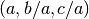 in the input file and hence converted into which is how they are always stored internally in
pyqha.Units must be 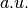 and 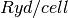
-
pyqha.read.read_EtotV(fname)[source]¶ Read cell volumes and the corresponding energies from input file fname (1st col, volumes, 2nd col energies). Units must be 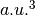 and
-
pyqha.read.read_dos(filename)[source]¶ Read the phonon density of states (y axis) and the corresponding energies (x axis) from the input file filename (1st col energies, 2nd col DOS) and store it in two numpy arrays which are returned.
-
pyqha.read.read_dos_geo(fin, ngeo)[source]¶ Read the phonon density of states and energies as in
read_dos()from ngeo input files fin1, fin2, etc. and store it in two numpy matrices which are returned.
-
pyqha.read.read_elastic_constants(fname)[source]¶ This function reads and returns the elastic constants and compliances from the file fname . Elastic constants (and elastic compliances) are stored in Voigt notation They are then 6x6 matrices, stored as numpy matrices of shape [6,6] So, the elastic constant C11 is in C[0,0], C12 in C[0,1] and so on. Same for the elastic compliances.
-
pyqha.read.read_elastic_constants_geo(fC, ngeo)[source]¶ Read elastic constants calculated on a multidimensional grid of lattice parameters ngeo defines the total number of geometries evaluated Note: the order must be the same as for the total energies!
-
pyqha.read.read_freq(filename)[source]¶ This funcstion reads the phonon frequencies at each q point from a frequency file. Input file has the following format (to be done).
Returning values are a nq*3 matrix q, each q[i] being a q point (vector of 3 elements) and a nq*modes matrix freq, each element freq[i] being the phonon frequencies (vector of modes elements)
-
pyqha.read.read_freq_ext(filename)[source]¶ Read the phonon frequencies at each q point from a frequency file. The format of this file is different from the one read by the function read_freq and contains usually more frequencies, each with a weight, but no qpoint coordinates. Input file has the following format:
First line contains n. atoms, nqx, nqy, nqz, nq total. Second line not read. Third line: weight of the first qpoint Following lines: phonon frequencies (their number is modes=3*n. atoms), one per line then again: weight of the next qpoint, phonon frequencies (3*modes), one per line, etc.
Weights are diffent because of simmetry
Returning values are a nq vector weights, each weights[i] being the weight of a q point and a nq*modes matrix freq, each element freq[i] being the phonon frequencies (vector of modes elements) at the qpoint i
-
pyqha.read.read_freq_ext_geo(inputfilefreq, rangegeo)[source]¶ Read the frequencies for all geometries where the gruneisen parameters must be calculated.
Notes: nq = qgeo.shape[1] -> total number of q points read modes = freqgeo.shape[2] -> number of frequency modes
-
pyqha.read.read_freq_geo(inputfilefreq, rangegeo)[source]¶ Read the frequencies for all geometries where the gruneisen parameters must be calculated. Start, stop, step must be given accordingly. It can be used to read the frequencies only at some geometries from a larger set, if necessary, providing the proper start, stop and step values.
Notes: nq = qgeo.shape[1] -> total number of q points read modes = freqgeo.shape[2] -> number of frequency modes
-
pyqha.read.read_thermo(fname, ngeo=1)[source]¶ Read vibrational thermodynamic functions (Evib, Fvib, Svib, Cvib) as a function of temperature from the input file fname. ngeo is the number of input files to read, corresponding for example to different geometries in a quasi-harmonic calculation. If ngeo>1 reads from the files fname1, fname2, etc. up to ngeo Input file(s) have the following format:
T 1 ... ... ... ... Lines starting with “#” are not read (comments).
Returning values are 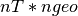 numpy matrices (T,Evib,Fvib,Svib,Cvib) containing the temperatures and the above mentioned thermodynamic functions as for example: Fvib[T,geo] -> Fvib at the temperature T for the geometry geo
Units must be K for temperature, Ryd/cell for energies, Ryd/cell/K for entropy and heat capacity.
pyqha.thermo module¶
-
pyqha.thermo.compute_thermo(E, dos, TT)[source] This function computes the vibrational energy, Helmholtz energy, entropy and heat capacity in the harmonic approximation from the input numpy arrays E and dos containing the phonon DOS(E). The calculation is done over a set of temperatures given in input as a numpy array TT. It also computes the number of phonon modes obtained from the input DOS (which must be approximately equal to , with N the number of atoms per cell) and the ZPE. The input energy and dos are expected to be in 1/cm-1. It returns numpy arrays for the following quantities (in this order): temperatures, vibrational energy, Helmholtz energy, entropy, heat capacity. Plus it returns the ZPE and number of phonon modes obtained from the input DOS.
-
pyqha.thermo.compute_thermo_geo(fin, fout=None, ngeo=1, TT=array([1]))[source] This function reads the input dos file(s) from fin+i, with i a number from 1 to ngeo + 1 and computes vibrational energy, Helmholtz energy, entropy and heat capacity in the harmonic approximation. Then writes the output on file(s) if fout!=None. Output file(s) have the following format:
T 1 ... ... ... ... and are names fout +1, fout +2,... for each geometry.
Returning values are (len(TT),ngeo) numpy matrices (T,gEvib,gFvib,gSvib,gCvib,gZPE,gmodes) containing the temperatures and the above mentioned thermodynamic functions as for example: Fvib[T,geo] -> Fvib at the temperature “T” for the geometry “geo”
-
pyqha.thermo.dos_integral(E, dos, m=0)[source] A function to compute the integral of an input phonon DOS (dos) with the 3/8 Simpson method. m is the moment of the integral, if different moments can be calculated. For example, with (default) it returns the number of modes from the dos, with it returns the ZPE. The input energy (E) and phonon DOS (dos) are expected to be in .
-
pyqha.thermo.gen_TT(Tstart=1, Tend=1000, Tstep=1)[source] A simple function to generate a numpy array of temperatures, starting from Tstart and ending to Tend (or the closest T<Tend accorinding to the Tstep ) with step Tstep .
-
pyqha.thermo.rearrange_thermo(T, Evib, Fvib, Svib, Cvib, ngeo=1)[source] This function just rearranges the order of the elements in the input matrices The first index of the returning matrices X now gives all geometries at a given T, i.e. X[0] is the vector of the property X a T=T[0,0] . X[0,0] for the first geometry, X[0,1] the second geometry and so on.
pyqha.write module¶
-
pyqha.write.write_CT(Ts, CT, fCout='')[source]¶ Write elastic constants calculated on a multidimensional grid of lattice parameters ngeo defines the total number of geometries evaluated Note: the order must be the same as for the total energies!
-
pyqha.write.write_C_geo(celldmsx, C, ibrav=4, fCout='')[source]¶ Write elastic constants calculated on a multidimensional grid of lattice parameters ngeo defines the total number of geometries evaluated Note: the order must be the same as for the total energies in the quasi-harmonic calculations!
-
pyqha.write.write_Etot(celldmsx, Ex, fname, ibrav=4)[source]¶ Read cell parameters (a,b,c,alpha,beta,gamma) and energies for a grid of cell parameters values from file output_energy1. Each celldms is a vector of lenght 6 containing a,b,c,alpha,beta,gamma respectively celldmsx and Ex contains the grid of values of celldms and E so that: celldmsx[0] = celldms0 Ex[0] = E0 celldmsx[1] = celldms1 Ex[1] = E1 celldmsx[2] = celldms2 Ex[2] = E2 ........ values are taken from the file “fname” ibrav is the Bravais lattice as in Quantum Espresso and is needed in input (default is cubic)
-
pyqha.write.write_elastic_constants(C, S, fname)[source]¶ Elastic constants (and elastic compliances) are stored in Voigt notation They are then 6x6 matrices, stored as numpy matrices of shape [6,6] So, the elastic constant C11 is in C[0][0], C12 in C[0][1] and so on. Same for the elastic compliances
-
pyqha.write.write_freq(qgeo, freq, filename)[source]¶ Write frequencies (or Gruneisen parameters) in a file. In this format also q points coordinates are written but not the weight of each point. It can be used to write the Gruneisen mode parameters, giving them in input as freq
-
pyqha.write.write_freq_ext(weights, freq, filename)[source]¶ Write frequencies (or Gruneisen parameters) on an extended mesh in a file. In this format, q points coordinates are NOT written but the weight of each point yes. It can be used to write the Gruneisen mode parameters, giving them in input as freq Write the gruneisen parameters